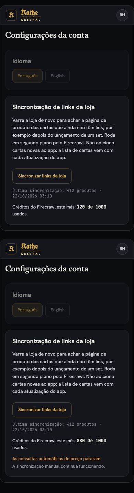
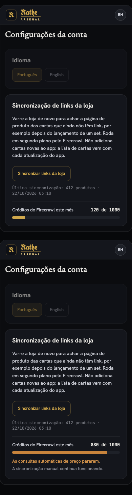

Uma frase embaixo do botão de sincronizar, com os créditos usados e o total. Em cima o estado normal, embaixo o estado parado.

Uma barra fina com os mesmos números, que fica âmbar quando as consultas param. Em cima o estado normal, embaixo o estado parado.
